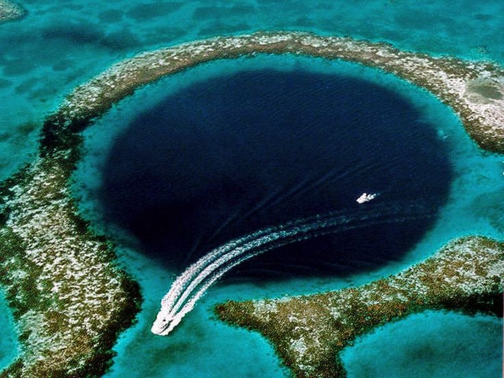

Blue Hole
بلو هول
:موقع البلو هول
.بلو هول بدهب.. ساحرة الغواصيين ونفق الغوص الأكثر جماًلا ورعبًا في العالم
:خطوره البلو هول
البلو هول أو الحفرة الزرقاء أو الثقب الأزرق تلك التي تعرف أيضا بحديقة العظام لكثرة من لقوا حتفهم فيها فكلها أسماء معروفة عالميا لموقع الغطس المتواجد على ساحل البحر الأحمر بمدينة دهب المصرية والتي يأتيها الغواصون من جميع أنحاء العالم ويعرفها جميع الغواصون بخطورة الغوص فيها ومع ذلك يأتونها من كل مكان لمجرد التحدي بمن يستطيع الغوص والخروج سالما.البلو هول شارع صغير تحت الماء بين الشعاب المرجانية
:وصف البلو هول
البلو هول مجرى مائي عميق على شكل حفرة طوله 90 متر وعمقه 100 متر وقطره 50 متر يشبه الشارع الصغير ويوجد وسط الشعاب المرجانية المغطاة بالمياه ولا يبتعد عن الشاطئ إلا بمسافة صغير جدا حتى أن الغواصون يستطيعون الوصول إليها إما سيرا على الأقدام أو بالسباحة لمسافة قصيرة جدا وهو يحظى بشعبية كبيرة بين الغواصين نتيجة لوجود تشكيلات مرجانية رائعة به وأعداد كبيرة جدا من الأسماك والأحياء المائية.
:سبب تكون البلو هول
يشاع أن هذه الحفرة قد تكونت منذ زمن بعيد نتيجة اصطدام احدي المذنبات بالأرض فحدثت تلك الفجوة التي على مر الزمن وتكونت بها أجمل وأروع المناظر الطبيعية من الشعب المرجانية والكائنات البحرية التي شجعت على الغوص فيها.هل هي حفرة للغوص أم حفرة للدفن
:الشهره
تشتهر الحفرة عالميا بأنها أروع مكان للغوص إلا أنه زادت شهرتها وأصبحت معروفة بكونها الأكثر خطورة حيث أنه فقد فيها نحو 130 شخص على مدار ال15 سنة الماضية في محاولة استكشاف الحفرة حتى أن البعض يسميها مقبرة الغواصين. ومن الذين فقدوا بها بعض رواد الغوص العميق (ديف شو – تشيك اكسلي) وغيرهم الكثير ممن ألفوا كتبا ومراجع في الغوص العميق وغوص الكهوف وتوجد بالقرب من الحفرة مجموعة من الشواهد بأسماء هؤلاء.الحفرة تمتلئ بالإحياء المائية وبما فيها من روعة الشعب المرجانية وبأشكالها المروحية والأسماك الملونة وأسماك الإنكليس الجميلة والعشرات والعشرات من أنواع الأسماك التي تتكاثر فيها و الرائعة الجمال ويتصل بها نفق يرتبط بالبحر يعرف بالقوس هو ما يشجع الغواصون على التنقيب فيها والبحث داخلها لاكتشاف الغموض الذي يحيط بها.سحر الأعماق وتحدي الخروج من الحفرة يؤدي للموت
:معظم الحوادث
تحدث معظم الحوادث عند محاولة الغواصين الوصول إلى فتحة النفق أو القوس عند عمق 60 متراً وذلك للسباحة والخروج إلى البحر المفتوح , وبسبب كون هذا العمق يتعدى الحدود القصوى الآمنة للغوص الترفيهي يصبحون عرضـة لمشكلات قلة الضوء ودخول تيارات هواء معاكسة تقلل من سرعة الغواصين وانتهاء كميات الهواء لديهم وتأثرهم بسكر وسحر الأعماق والدوار حتى الموت.رغم كل شيء الغواصون مازالوا يذهبون إليها
:اسباب قدوم الغواصين
ومن أسباب إقبال الغواصون من جميع أنحاء العالم على الحفرة رغم خطورتها كون المنطقة هادئة وغير مزدحمة ولها طبيعة خلابة وغريبة ومياه البحر فيها زرقاء نقية، مليئة بالأحياء البحرية المتنوعة علاوة على النفق أو القوس الذي بها والذي عمقه 60 متر ويجذب الغواصين للدخول فيه والخروج من الجهة الأخرى على البحر المفتوح للبحث عن المغامرة رغم أنها محاطة بالمخاطر وتسبب الوفاة للكثيرين الذين يحاولون اكتشاف المزيد والتمتع بغموض المغامرة
الاحتياطات اللازمة
يجب توخي الحذر و الحيطة عند الذهاب إلى هناك
وينبغي على زائر هذا المكان أخذ الاحتياطات اللازمـة والتخطيط السليم للغوص مع دليل يعرف الحفرة جيداً هذا بالإضافة إلى حمله مخزونا كافيا من الهواء أو غازات التنفس